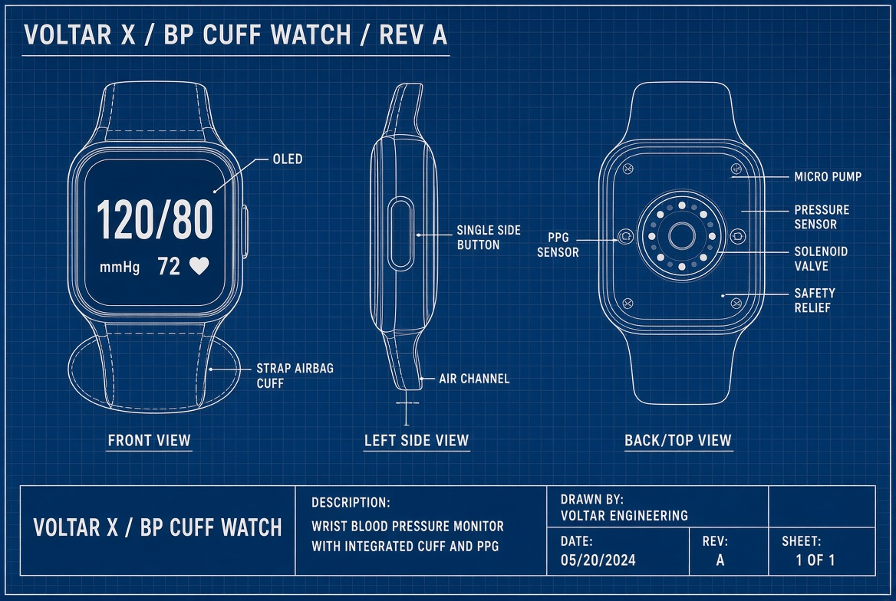
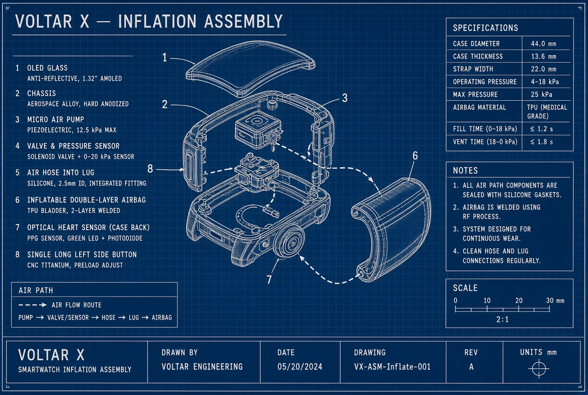
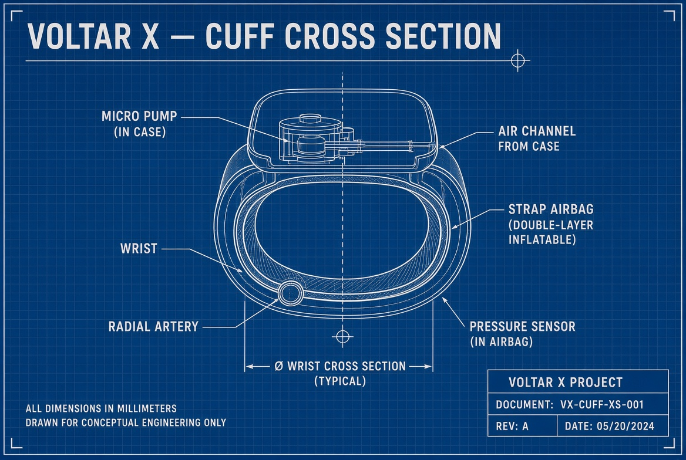

One long left button. Soft case. Cuff strap inflates for blood pressure. Tap a face below or press the side button.
Interactive mock of the Voltar X watch. Hardware idea: Huawei Watch D–style mini pump + inflatable strap, iOS-simple face, one long button on the left, almost no edges. It is not a medical device — it shows how the product should feel.
Once a day (or when the user / doctor asks): watch reminds → user stays still, wrist at heart level → pump fills the strap → sensor reads pulse waves while it deflates → systolic / diastolic saved to the Voltar account → assigned doctor can see it.
| Face | What it shows | Why it exists |
|---|---|---|
| Home | Time, last BP, last HR | Glance. No extra buttons. |
| Blood pressure | 118/76, status, next auto reading | Main medical number. |
| Inflating | Hold still, cuff tightening | The actual measurement moment. |
| Heart rate | Live bpm | Everyday heart check. |
| ECG | 30-second rhythm strip | AFib / irregular beat for the doctor. |
| Steps | Count, distance, calories | Activity for heart health. |
| Sleep | Fell asleep / woke up | Overnight recovery. |
| Meds | Drug name + Take now | Prescription alarm on the wrist. |
Press the long silver button, tap the screen, or use the pills under the watch. Mark taken on the meds face logs a dose in this demo only.
These sheets are the hardware prototype. A normal watch CAD cannot take blood pressure. Voltar X adds a pump in the case and an airbag in the strap. The glass does not inflate.


